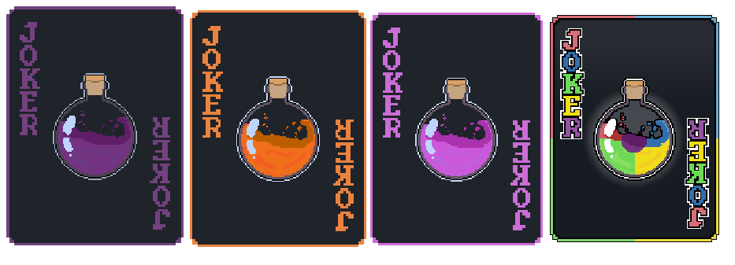
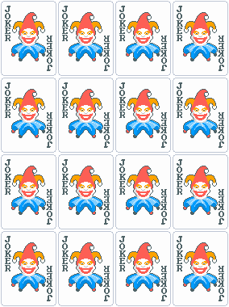
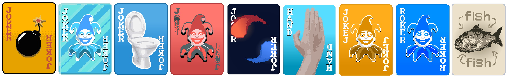

Deer's Jokers
Potion Update (2/2) [2.2.0]
Changelog
4 New Potion Jokers

Joker^3
I wonder what it does🤔

Jokers Sprite Overhaul

Bug Fixes
Orange Potion Bug:
Fixed Orange Joker not granting the player Hand Size
Download
[WIP] Click here to download the mod [WIP]